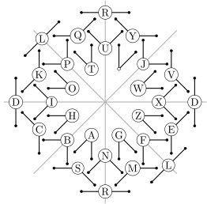

Flag semaphor ↗ is a method historically used to transfer infromation between ships. Currently, it is one of several methods of encrypting text in cypher games. While encoding text is best done with a map from alphabet to the semaphore decoding is not so easy. Either one has to decode in reverse direction to the alphabet, or with a 2d table that has one hand in rows and the second hand in columns – this still takes quite a long time to find the correct cell. Towards making this process easier for people that did not memorize the encoding by hearth I devised the following decoding design.

The image is generated in LaTeX using TikZ package from the following source code. Both the image and the source code is put to the public domain and can be used without any restrictions whatsoever. I would still appreaciate a memo if someone uses it.
\documentclass{standalone}
\usepackage{tikz}
\usetikzlibrary{calc}
\begin{document}
% position, degree 1, degree 2, text
\newcommand{\semafor}[4]{
\node[draw,fill=white,circle,inner sep=1pt] (#4) at #1 {#4};
\node[draw,fill,circle,inner sep=.8pt] (a) at ($(#4)+(#2:.8)$) {};
\node[draw,fill,circle,inner sep=.8pt] (b) at ($(#4)+(#3:.8)$) {};
\draw[thick,line cap=round] (#4) -- (a);
\draw[thick,line cap=round] (#4) -- (b);
}
\begin{tikzpicture}
\foreach \i in {45,90,...,360}{
\draw[gray!60,thick] (0,0) -- (\i:3.4);
}
\foreach \distance/\degree/\letter in {
0/0/D,
0/90/R,
0/135/L,
0/180/D,
0/270/R,
0/315/L,
1/22.5/V,
1/67.5/Y,
1/112.5/Q,
1/157.5/K,
1/202.5/C,
1/247.5/S,
1/292.5/M,
1/337.5/E,
2/0/X,
2/45/J,
2/90/U,
2/135/P,
2/180/I,
2/225/B,
2/270/N,
2/315/F,
3/22.5/W,
3/67.5/~,
3/112.5/T,
3/157.5/O,
3/202.5/H,
3/247.5/A,
3/292.5/G,
3/337.5/Z
} {
\pgfmathsetmacro\half{(4-\distance)/2*45}
\pgfmathsetmacro\one{\degree-\half}
\pgfmathsetmacro\two{\degree+\half}
\pgfmathsetmacro\fdist{3-\distance*0.6}
\semafor{(\degree:\fdist)}{\one}{\two}{\letter}
}
\end{tikzpicture}
\end{document}